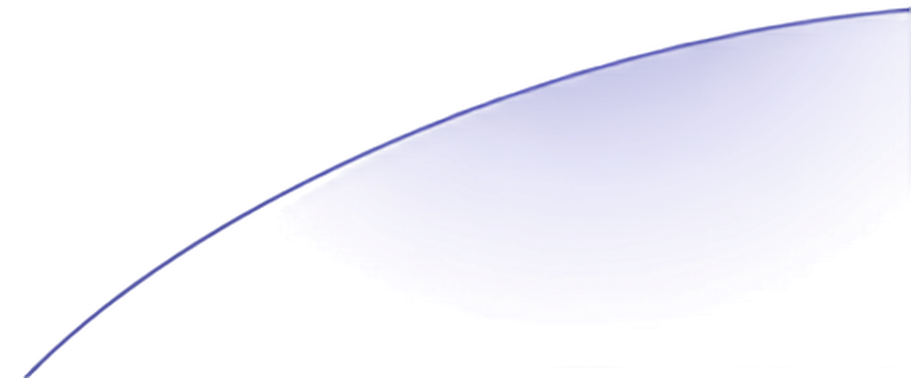
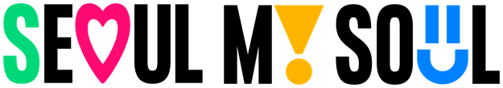
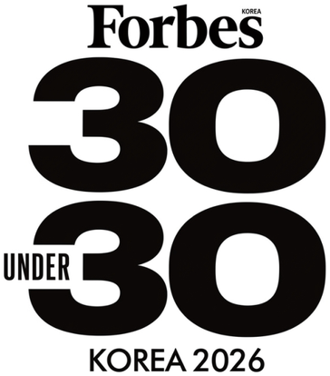

인사이트 포트폴리오 특강
10년차 라이프 디자이너가 알려주는
서울시민대학
다시가는캠퍼스 소강당2026. 7. 24.(금) 19:00~20:30
커리어 교육 솔루션 기업 매치워크 대표
2026 포브스코리아 30세 미만 30인 선정
Forbes Under 30
Korea Summit
2026. 6. 8.
"우리가 배운 자기이해,
바로 그 이야기를
전할 수 있는 인물"
네 명의 청년이 보낸 메일,
그리고 화답
여러분의 멘토가 되어
포트폴리오 스토리를 공유
2026.7.24.
권수연 매치워크 대표
자기이해를 기반으로 '건강한 취업 준비'를 설계합니다

10년차 라이프 디자이너,
매치워크 권수연 대표의 포트폴리오 스토리
지금부터 시작합니다!
→Space 다음 슬라이드 / ← 이전 슬라이드
0–4 해당 슬라이드로 바로 이동
B 또는 . 블랙아웃 (연사 등장 후 화면 끄기) — 다시 누르거나 Esc로 복귀
F 전체화면 / H 이 도움말 / 화면 클릭 = 다음 (문자 키는 한/영 상태 무관)
PDF 백업: 브라우저 인쇄(Ctrl+P) → PDF로 저장